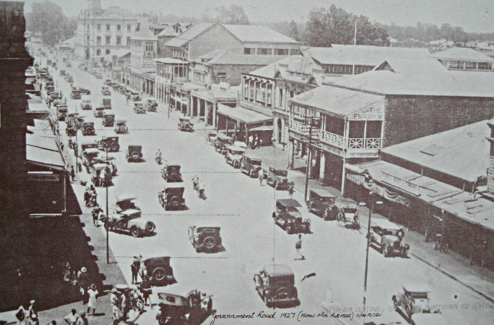

Introduction
As Kenya strides into the future, its urban landscapes bear witness to a rich tapestry of historical, social, and economic forces. From the bustling streets of Nairobi to the coastal charm of Mombasa, the evolution of these cities reflects the complex interplay of colonial legacies, post-independence aspirations, and contemporary challenges. In this blog, we embark on a journey through time to explore the historical perspective of spatial planning in Kenya and its profound impact on shaping the nation’s urban environments.
Colonial Foundations: The Birth of Planned Settlements
The roots of spatial planning in Kenya can be traced back to the colonial era, when British administrators sought to establish order and control over the vast territory. Nairobi, founded in 1899 as a railway depot, emerged as the administrative and commercial hub of British East Africa. The city’s layout was carefully planned, with distinct zones segregated along racial lines—a legacy that continues to influence its spatial dynamics to this day.
Similarly, other urban centers such as Mombasa and Kisumu were also subject to colonial planning principles, characterized by segregated residential areas, designated commercial districts, and limited provision of public services for indigenous populations.
Post-Independence Realities: The Quest for Nation-Building
With independence in 1963, Kenya embarked on a journey of nation-building and development. The newly formed government recognized the need for comprehensive spatial planning to accommodate rapid urbanization, stimulate economic growth, and promote social equity. The 1970s witnessed the formulation of the Sessional Paper No. 10 of 1965 on African Socialism and its Application to Planning in Kenya, which outlined principles of decentralization, rural development, and balanced regional growth.
However, the idealistic vision outlined in policy documents often clashed with the realities on the ground. Rapid population growth, rural-urban migration, and informal settlements challenged the capacity of urban authorities to provide adequate infrastructure and services, leading to the proliferation of slums and unplanned developments on the urban periphery.
Devolution: Empowering Local Communities in Kenya’s Spatial Planning
The promulgation of Kenya’s new constitution in 2010 marked a significant milestone in the nation’s governance framework, ushering in a new era of devolution. Enshrined in the constitution, devolution seeks to decentralize power and resources, empowering local communities to actively participate in decision-making processes and take charge of their own development agendas.
The tenets of devolution as envisioned in the constitution are rooted in principles of democracy, accountability, and inclusivity. It aims to foster equitable distribution of resources, promote local self-governance, and enhance service delivery at the grassroots level. Through the establishment of county governments and the devolution of specific functions, such as healthcare, agriculture, and urban planning, devolution seeks to address the unique needs and priorities of diverse regions across Kenya.
At its core, devolution is not just about transferring authority from the central government to county administrations; it is about transforming governance structures to be more responsive, transparent, and accountable to the needs of citizens. By devolving decision-making powers closer to the people, the constitution aspires to promote social cohesion, foster participatory democracy, and facilitate bottom-up approaches to development planning.
In the context of spatial planning, devolution presents both opportunities and challenges. On one hand, it offers the potential for more contextually relevant and responsive planning processes that take into account local realities and aspirations. County governments are empowered to develop spatial plans tailored to the specific needs of their constituents, whether it be urban revitalization, rural development, or environmental conservation.
Looking Ahead: Towards Inclusive and Sustainable Urban Futures
As Kenya grapples with the complexities of urbanization, the importance of spatial planning cannot be overstated. By learning from the lessons of history, embracing innovation, and fostering collaboration among stakeholders, we can chart a path towards inclusive and sustainable urban futures. Through informed decision-making, community engagement, and visionary leadership, Kenya has the opportunity to shape its urban landscapes in ways that reflect the aspirations of its people and safeguard the prosperity of generations to come.